Sale & event — phân tích sâu
Đi sâu vào cơ chế phía sau các popup bán hàng và sự kiện: thứ tự điều phối, chỗ trống trên Home, hệ số độ khó, chuỗi giữ chân khi bỏ cuộc, giá theo phân khúc, cấu hình quảng cáo, và những gì lộ ra khi ép bật các tính năng server đang tắt.
- Nguồn: code IL2CPP đã dịch ngược (tên lớp/hàm ghi trong ngoặc), config cache trên máy, và buổi chơi thử 07/10/2026.
- Mỗi mục có Tóm lại ở đầu; phần chi tiết dành cho người cần tra số.
1. Điều phối popup khi về Home
Tóm lại: sau mỗi màn, game chạy một danh sách 49 lệnh cố định. Mỗi lệnh tự kiểm tra có nên hiện popup hay không, nên thứ tự ưu tiên giữa các sự kiện nằm trong code, không do server quyết định.
Thứ tự lệnh (ReturnToHomeSequenceService.Initialize), nhóm theo mục đích:
| Nhóm | Lệnh theo thứ tự |
|---|---|
| Hệ thống & giữ chân | Welcome Back → Super Charger → Magic Streak Leaderboard → Jetpack Race → Jetpack Race 3 chặng → Teams → Magic Pass kết thúc |
| Quảng cáo | No Ads Offer → Watch and Win |
| Tiến độ chuỗi thắng | Sky Jump tăng bậc (2 bản) → Magic Streak tutorial → thanh Magic Streak → đổi tên bắt buộc |
| Kích hoạt & thưởng | Collection kích hoạt → Snitch kích hoạt → Magic Bottle chúc mừng → thưởng Magic Streak → Rate Us |
| Popup sự kiện | Magic Bottle → Snitch → Broom Streak → Treasure Drill → Wheel of Fortune → Tower Win Streak → Boat Rush (Join, Race) → Sky Jump Join (2 bản) |
| Thưởng ngày & giải | Daily Reward → nhận gộp Daily Reward → Master League (nhận thưởng, bảng, Join) → Duck Festival → Magic Lab |
| Offer | Endless Portal → Special Offer → Choose One |
| Còn lại | Weekly Cup → Daily Challenge → Magic Pass tutorial → Mini Game → Team Quest (Join, popup) → Team Arena (Join, sự kiện) → Merge Bakery → Soft Update |
Ghi nhận khi chơi thật:
- Giới hạn
homeReturnPopupShowLimit = 2đang bật, nhưng chỉ chặn popup có thể bỏ qua (IsSkippable). Popup luật chơi lần đầu, popup kích hoạt và popup nhận thưởng không bị chặn: sau màn 347 có 10 popup liên tiếp. - Offer (Endless Portal, Special Offer, Choose One) nằm gần cuối danh sách. Khi đã có 2 popup sự kiện, offer bị đẩy sang lần về Home sau.
sessionStartPopUpShowLimit = 0(cờ bật): khi mở app chỉ thấy popup giới thiệu hoặc nhận thưởng, không thấy offer tự bật.

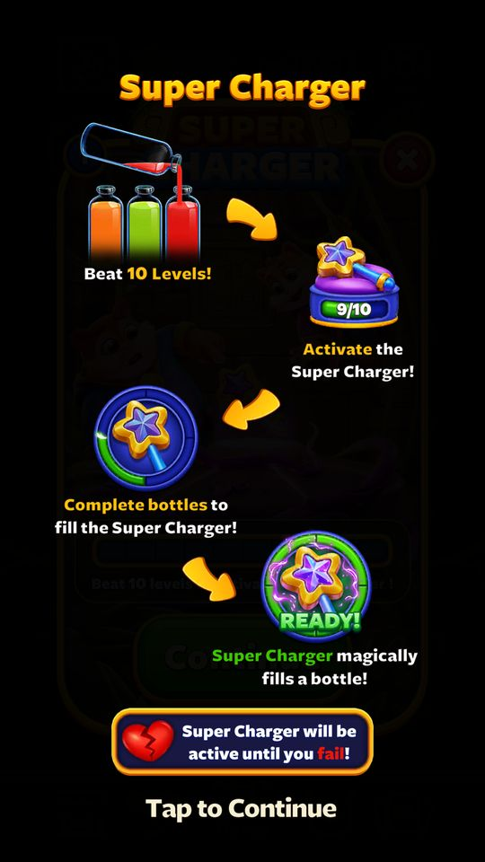

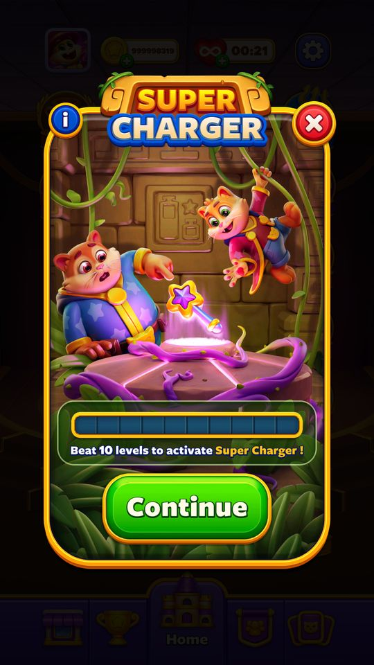

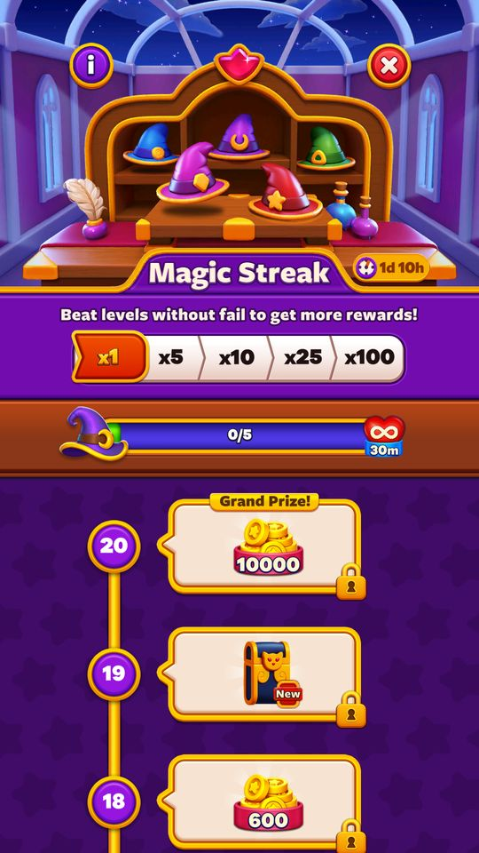

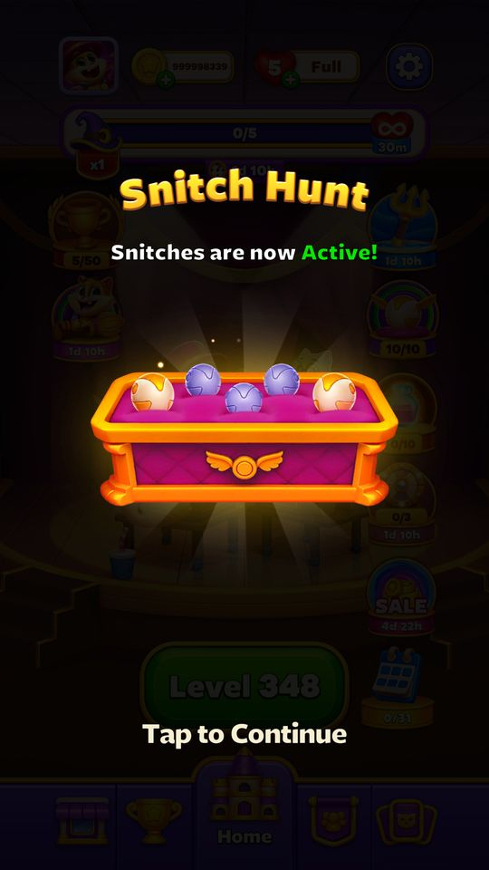

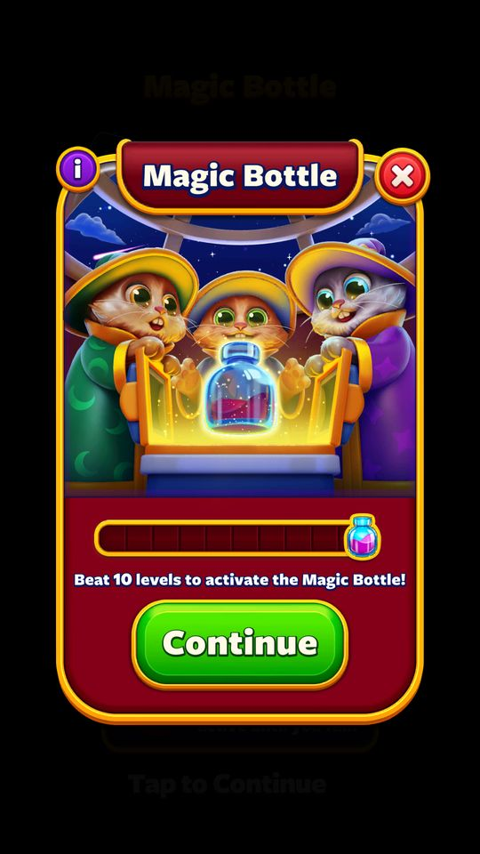

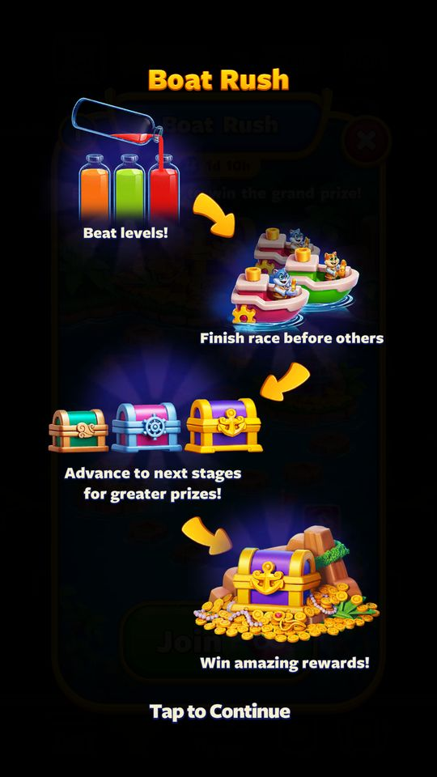

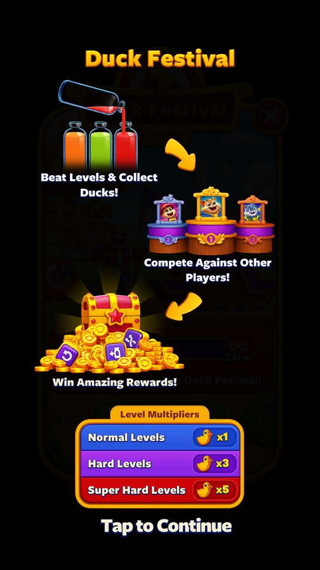

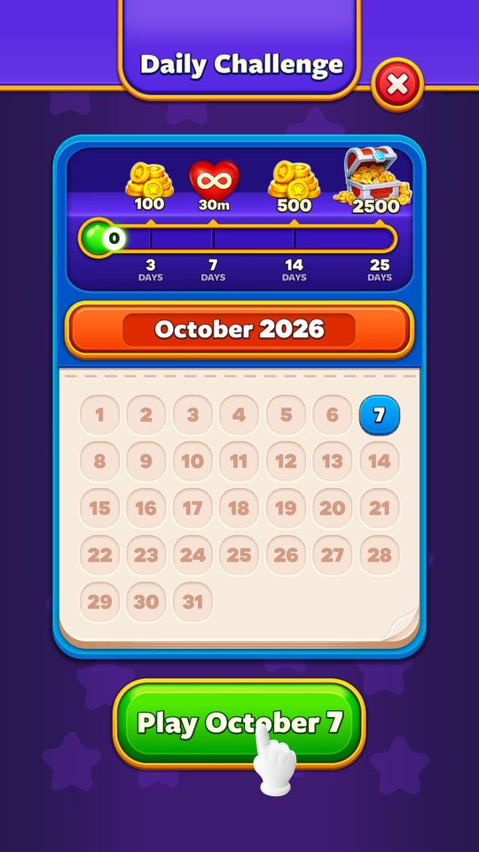
2. Chỗ trống icon trên Home
Tóm lại: cột trái chứa tối đa 4 icon, cột phải 5 (LobbyEventsService._availablePositions). Sự kiện nào đứng sau trong danh sách sẽ không có icon, dù vẫn đang chạy.
| Cột | Thứ tự ưu tiên (LobbyEventMap) |
|---|---|
| Phải (5 chỗ) | Magic Pass → Wheel of Fortune → Magic Lab → Underwater Treasures → Snitch → Endless Portal → Special Offer → Choose One → Treasure Drill → Watch and Win → Merge Bakery |
| Trái (4 chỗ) | Duck Festival → Broom Streak → Jetpack Race 3 chặng → Team Arena → Team Quest → Boat Rush |
Master League, Sky Jump, Magic Bottle và thanh Magic Streak có vị trí riêng, không chiếm các ô này.
Hệ quả thiết kế:
- Gói trả tiền (Special Offer, Choose One, Treasure Drill) đứng sau các sự kiện miễn phí ở cột phải. Tuần nào có nhiều sự kiện thì offer mất icon, chỉ còn cơ hội qua chuỗi popup về Home.
- Lúc chụp: Underwater Treasures, Wheel of Fortune, Endless Portal, Heavenly Deal chiếm 4 chỗ; ép bật thêm Snitch và Magic Bottle thì Heavenly Deal mất icon. Tắt Underwater và Endless Portal thì Heavenly Deal và Treasure Drill quay lại.

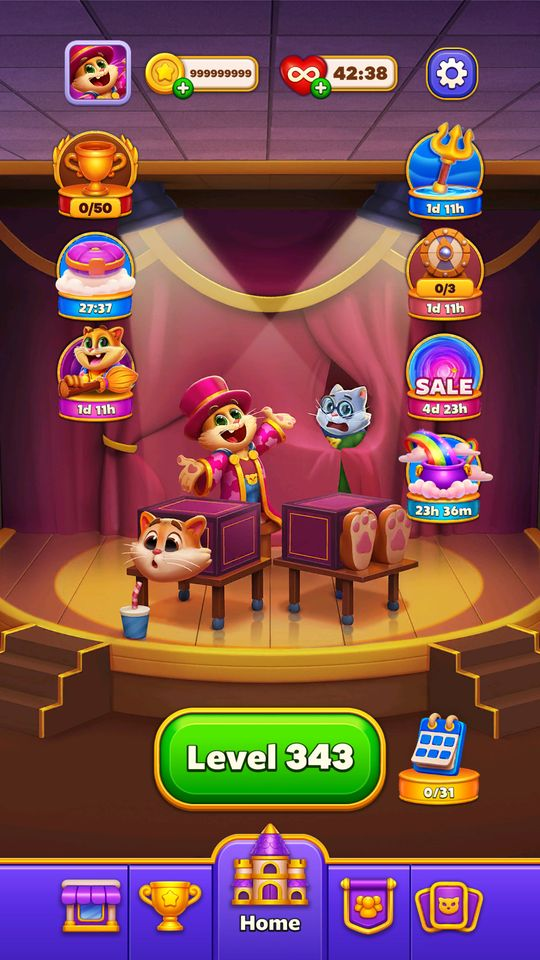

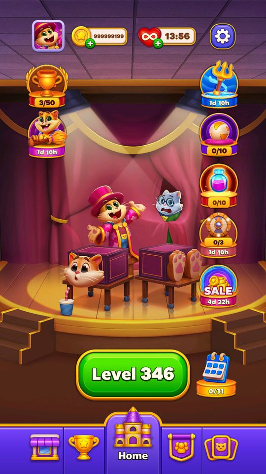

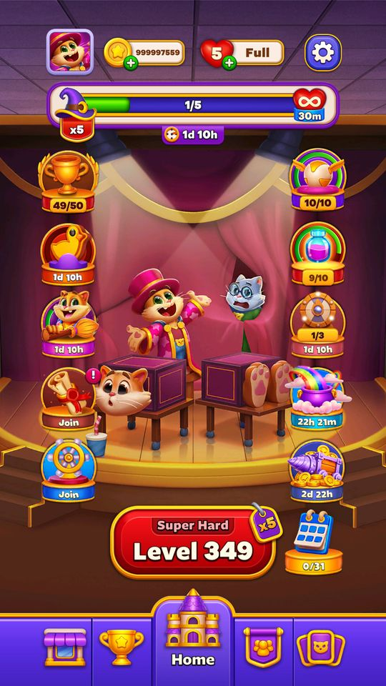

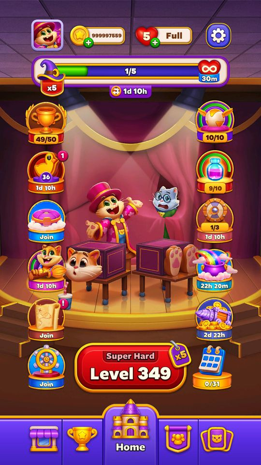
3. Hệ số độ khó
Tóm lại: độ khó màn quyết định cả thưởng coin lẫn tốc độ lên sự kiện. Màn Super Hard đáng giá gấp 5 màn thường với hầu hết sự kiện.
| Màn thường | Hard | Super Hard | |
|---|---|---|---|
| Coin thắng màn | 20 | 60 | 100 |
| Vịt (Duck Festival), bản đồ (Team Quest), chìa (Magic Pass) | x1 | x3 | x5 |
| Đinh ba (Underwater) | x1 | x2 | x3 |
| Điểm Team Arena / Team Quest | 1 | 3 | 5 |
| Giao diện | Nút xanh | Nút tím, 1 đầu lâu, nhãn x3 | Nút đỏ, 3 đầu lâu, nhãn x5 |
Magic Streak cộng thêm một lớp hệ số theo chuỗi thắng: x1 → x5 → x10 → x25 → x100. Thực tế ngày 07/10: thắng Super Hard 349 ở hệ số x5 đủ ngay 5/5 mũ và nhận 30 phút mạng vô hạn.

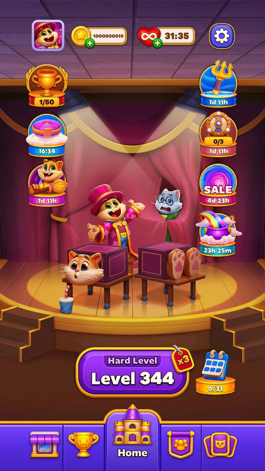

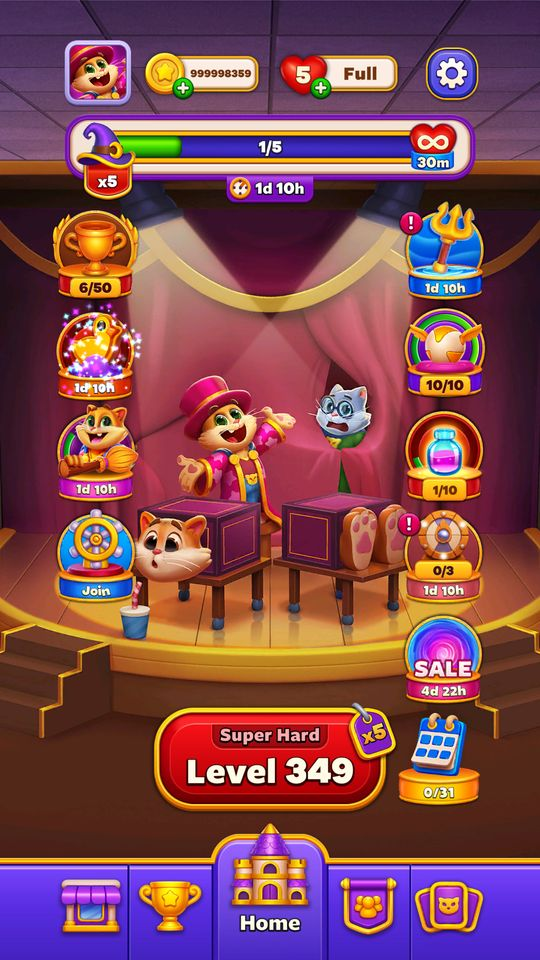

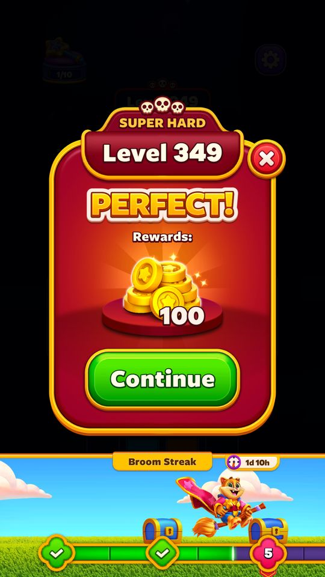

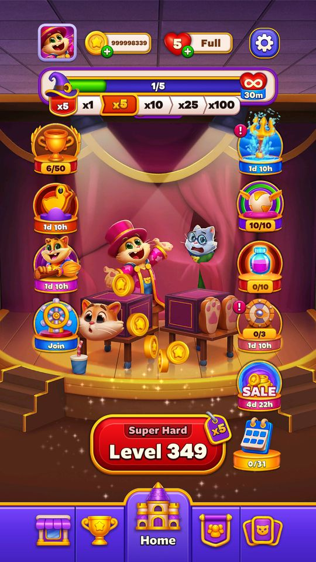

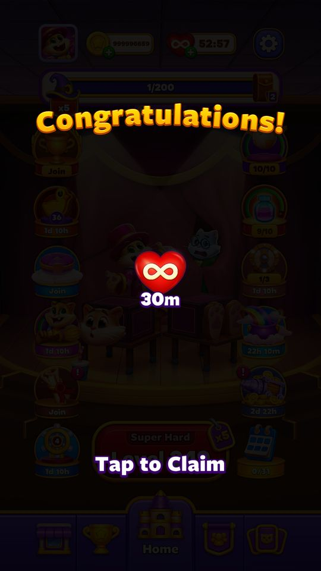

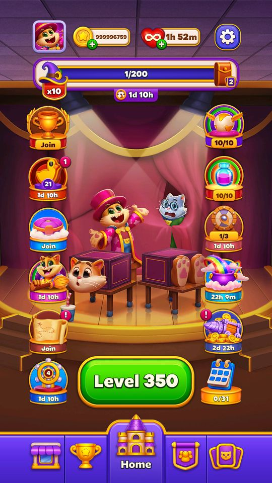
4. Chuỗi giữ chân khi bỏ cuộc
Tóm lại: bỏ màn không chỉ mất 1 mạng. Mỗi sự kiện đang có tiến độ chen thêm một popup "Are You Sure?", và popup nào cũng mời Play On.
Hai đường bỏ cuộc và các popup ghi nhận được:
| Đường | Popup lần lượt |
|---|---|
| Kẹt → Give Up | "Continue? You will lose your streak!" (Broom Streak 2/5) → "Continue? You will lose 1 life!" → "Level Failed!" nhắc 20 coin lẽ ra nhận được → Try Again |
| Menu → Quit | "You will lose 1 life!" → "You might lose your Rank!" (Master League) → (nếu đang đua) "You will lose your streak!" (Sky Jump) → "Level Failed!" có dải Magic Streak tụt về x1 |
Đánh giá:
- Mỗi popup nêu một thứ mất cụ thể (chuỗi, mạng, hạng) nên rất có sức nặng. Cũng vì vậy người chơi nhiều sự kiện phải bấm 3–4 lần mới thoát được màn.
- Giá Play On ở popup giữ chân vẫn là 900 coin, không giảm giá để cứu chuỗi. Có thể thử A/B một mức giá "giữ chuỗi" thấp hơn ở popup thứ hai.

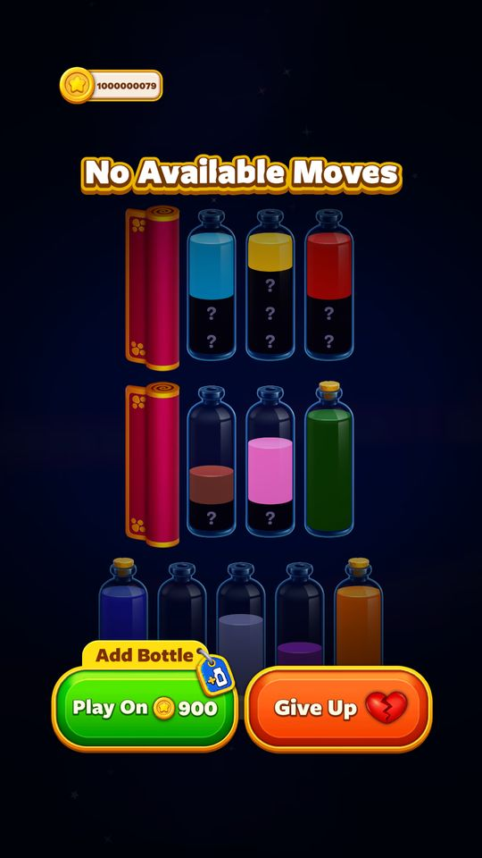

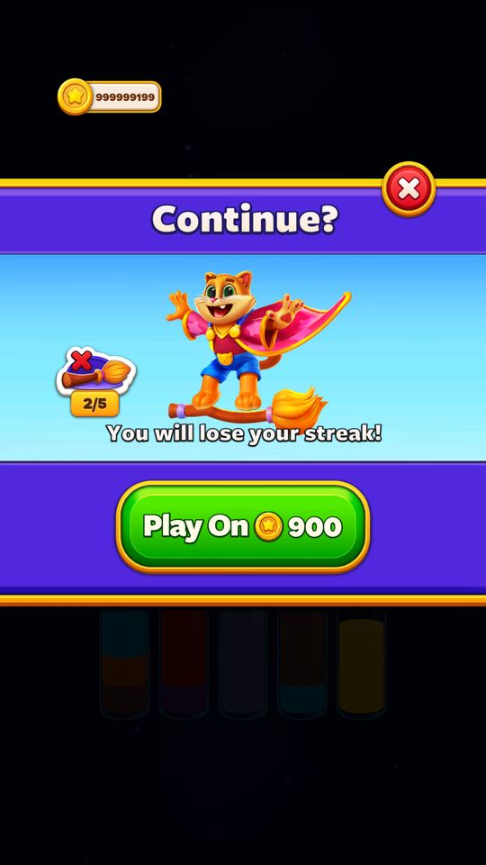

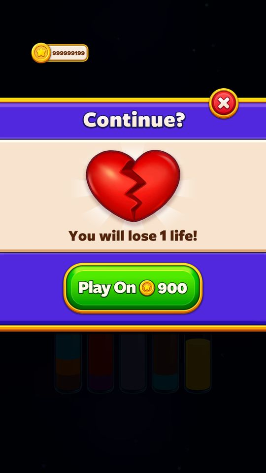

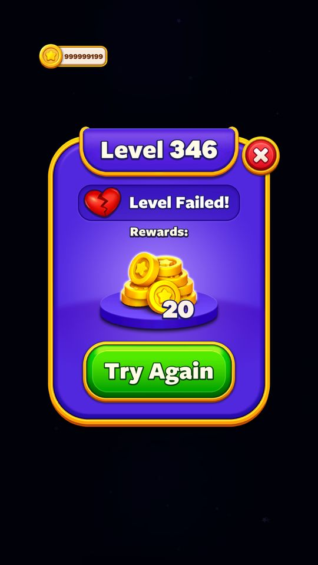

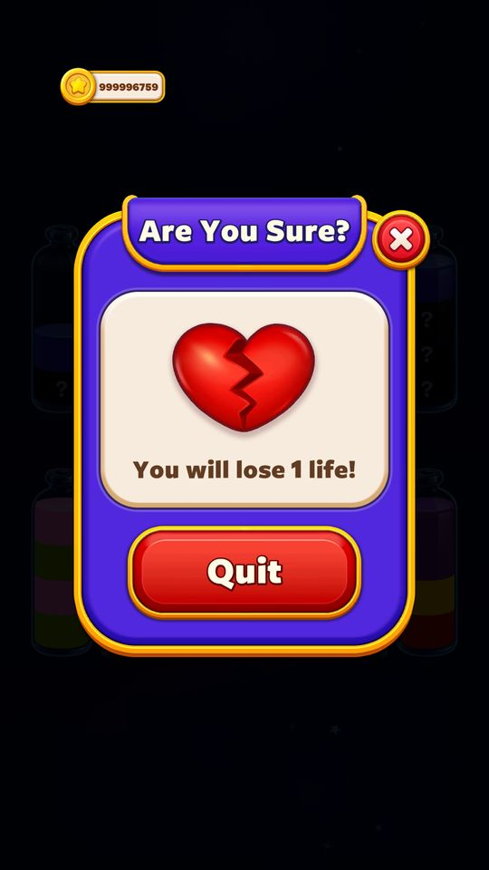

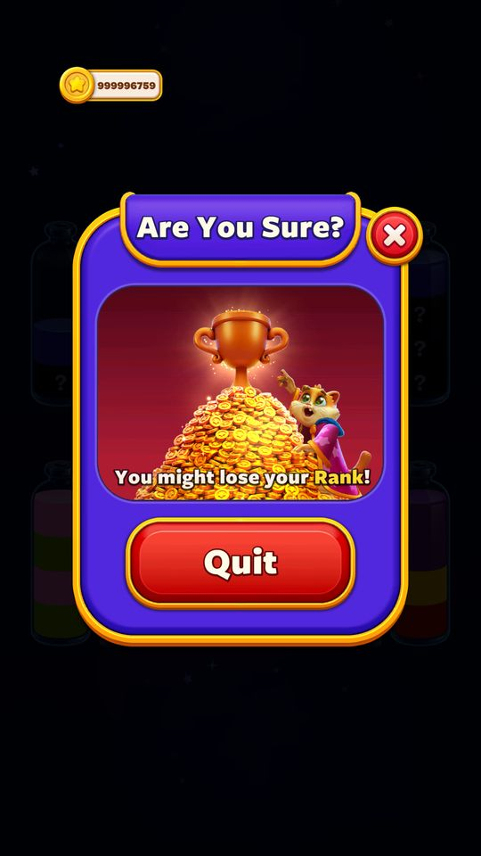

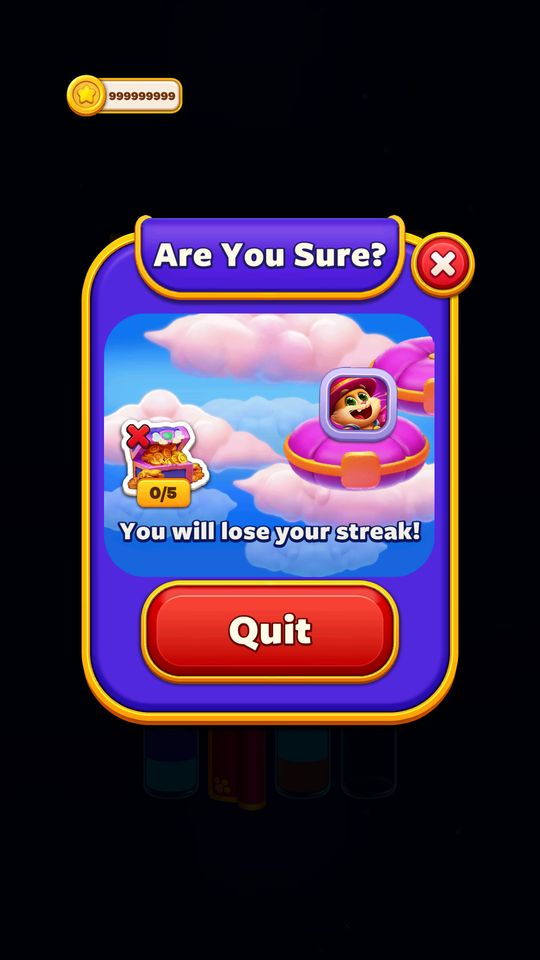

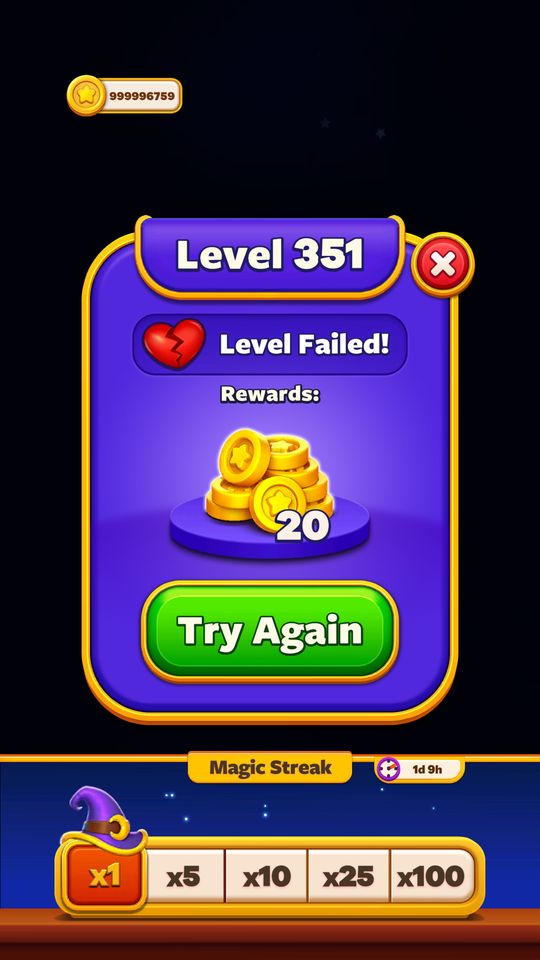
5. Kinh tế điểm kẹt
Tóm lại: kẹt là lúc người chơi sẵn sàng trả tiền nhất. Game xếp 4 lớp ở đây: Play On bằng coin, Play On bằng quảng cáo, offer chèn vào popup kẹt, và Ego offer.
- Play On bằng coin (
PlayOnManager): 900 / 1.900 / 2.300 coin cho lần 1/2/3 trong cùng màn, đếm theoLevelStats._playOnUsage. Mỗi lần thêm 1 ống rỗng. Không đủ coin thì mở Shop. - Play On bằng quảng cáo (
PlayOnWithRewarded): đang tắt trong config quảng cáo của segment này (playOnWithRewardedEnabled = false). - Paw Touch Offer: khung offer chèn ngay trong popup kẹt, sống 30 phút từ lúc hiện (
showDurationInSeconds = 1800). Gói của tài khoản thử:sort.pawtouch1(0,99 USD, -90%) = 1.200 coin + 1 giờ mạng vô hạn; đã hết hạn lúc 14:00 ngày 07/10 nên không chụp được. - Ego offer: Special Offer và Treasure Drill có nhánh "Ego" hiện offer lúc kẹt, nhưng đang tắt (
shouldShowEgoOffer = false). Thứ tự ưu tiên ego chungegoOfferPriorities = [0, 1, 2, 3]. - More Lives: hết mạng mà bấm chơi thì hiện Refill 900 coin hoặc xem quảng cáo nhận +1 Life.
Trong 5 lần kẹt ghi nhận (level 345, 346 hai lần, 349), cả 5 lần đều là lần kẹt đầu trong màn nên giá 900 coin.

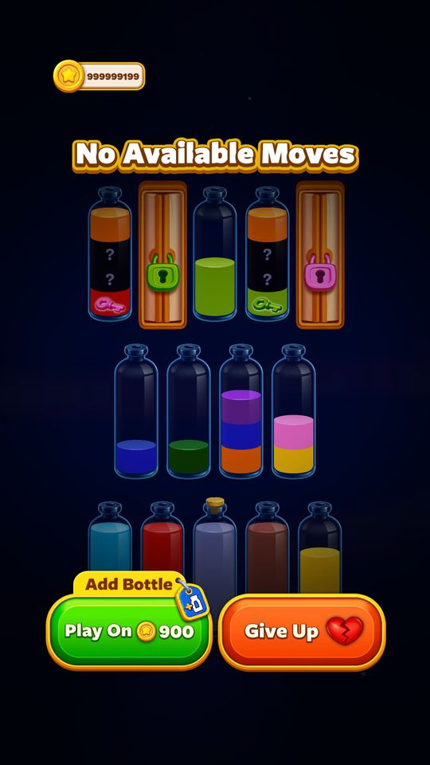

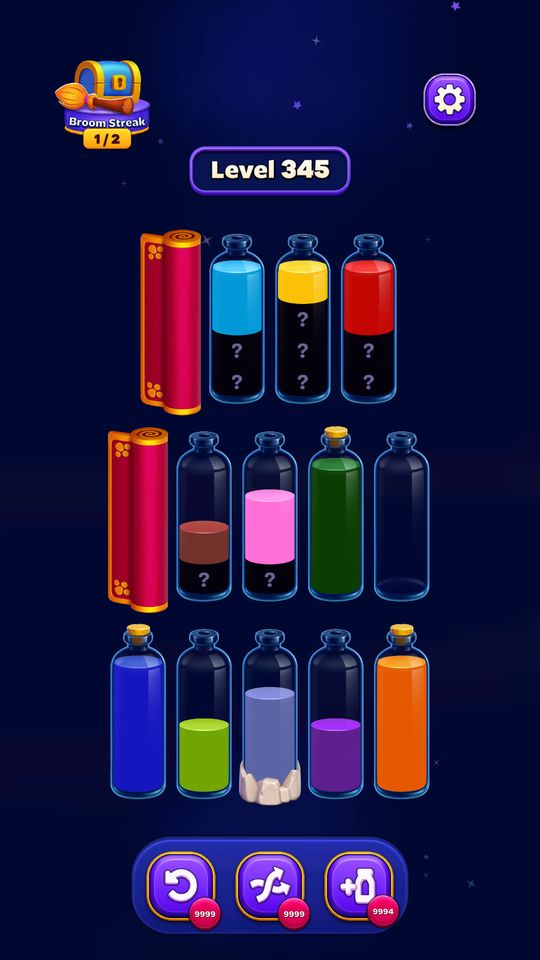

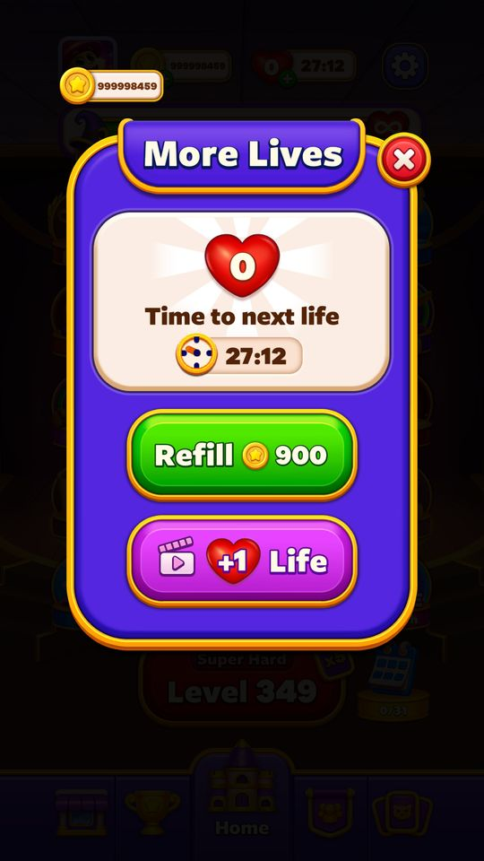

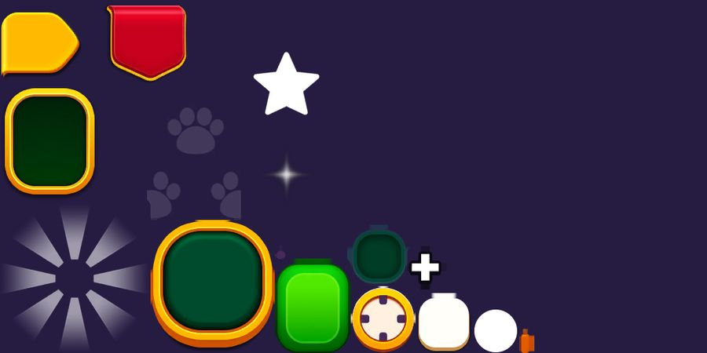
6. Giá theo phân khúc người chơi
Tóm lại: server chia người chơi thành 5 phân khúc theo mức chi tiêu. Cùng một sự kiện, mỗi phân khúc thấy một mức giá khác nhau.
| Sự kiện | non-purchaser | poor | hamsi | dolphin | whale |
|---|---|---|---|---|---|
| Treasure Drill (mở khóa) | 2 USD | 5 | 10 | 15 | 25 |
| Underwater Trident Deal (-80%) | 0,99 | 1,99 | 2,99 | 3,99 | 4,99 |
Tài khoản thử là non-purchaser: Treasure Drill hiện 62.000 VND (sort.treasuredrill2).
Special Offer, Endless Portal, Choose One, Paw Touch nhận gói từ backend theo segment (SegmentedOfferPackage). Client chỉ giữ danh sách productId hợp lệ và một bộ quà dự phòng khi không tra được gói.
Magic Streak cũng chia bảng mốc theo mức chi tiêu (rewardStepsW / các bảng khác trong magicStreakGaeConfigModel): người chi nhiều thấy mốc thưởng khác.

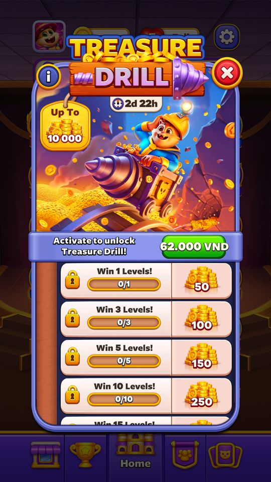

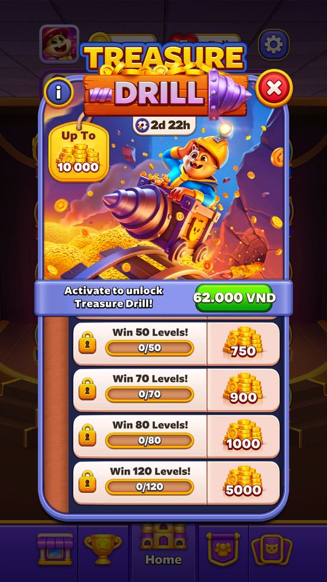

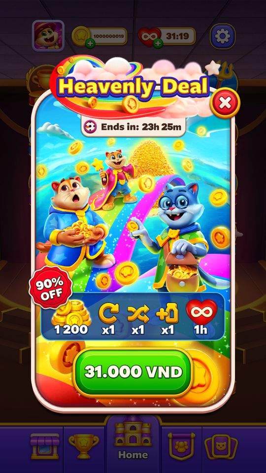
7. Quảng cáo
Tóm lại: người chơi chưa mua thấy quảng cáo xen kẽ sau màn từ level 61, cách nhau ít nhất 240 giây. Rewarded chỉ dùng cho +1 mạng ở segment này.
Thông số (adConfigModel + backend configType 48) | Giá trị |
|---|---|
| Interstitial | Bật, từ level 61, tối thiểu 240 giây giữa 2 lần |
Interstitial theo CPM (SegmentedAdConfigModel) | Nhóm CPM thấp: từ level 23, 400 giây |
| Banner | Tắt |
| Rewarded x2 coin sau màn | Tắt |
| Rewarded +1 Life | Bật |
| Play On bằng rewarded | Tắt |
| Watch and Win | Tắt ở backend (isWatchAndWinEnabled = false) |
| Gói No Ads | Sorcerer / Mage / Wizard Bundle (shouldCloseAds = true), gói sort.noadsoffer 7,99 USD |
Trên giả lập, quảng cáo dạng chơi thử (playable) của AppLovin không hiện nút đóng sau hơn 2 phút, nút Back cũng không thoát được; người chơi chỉ còn cách tắt app (màn đã thắng vẫn được tính).

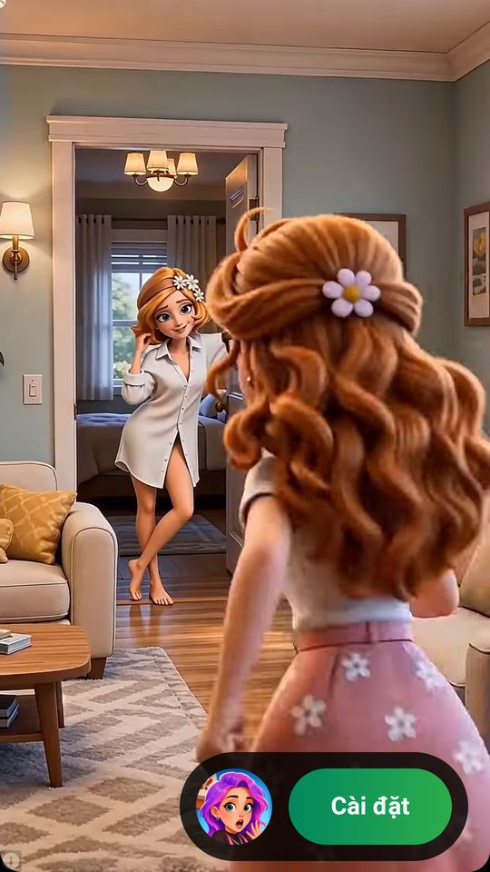

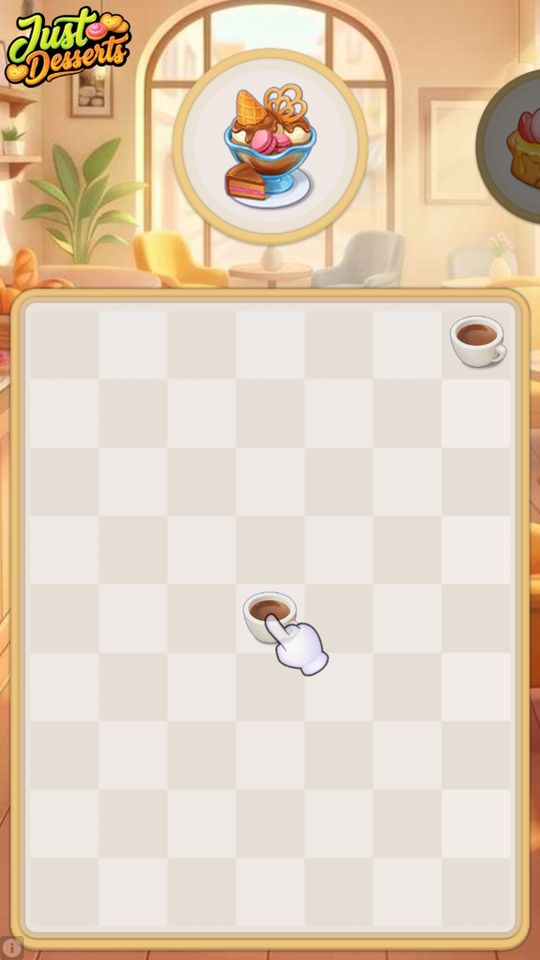

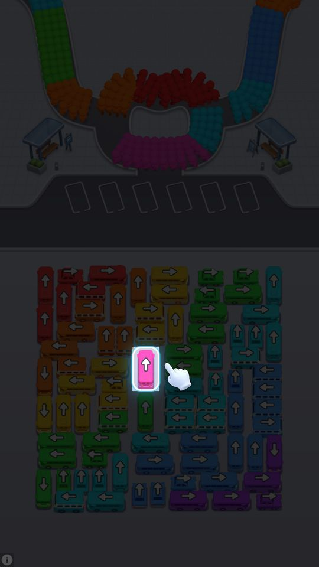

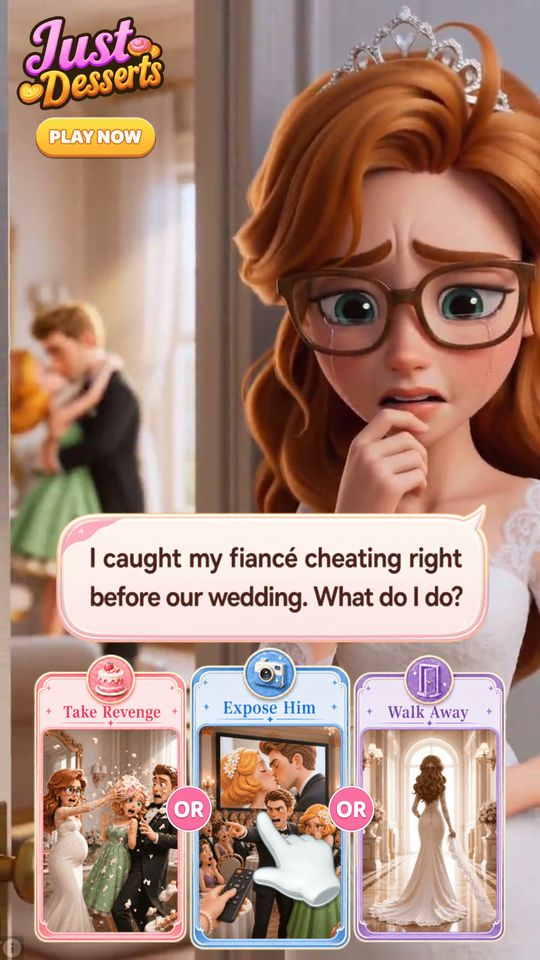

8. Tính năng chưa chạy với tài khoản thử: client đã có sẵn
Tóm lại: khoảng 15 tính năng có đủ code và hình nhưng chưa chạy với tài khoản thử, vì server tắt cờ hoặc chưa gửi dữ liệu phiên. Một số chạy được ngay khi bật cờ trong config trên máy.
| Tính năng | Ép bật được? | Ghi nhận |
|---|---|---|
| Snitch Hunt | Có | Đủ luật, popup, rương 5 Snitch, tutorial trong màn |
| Super Charger | Có | Luật + popup tiến độ, icon 0/10 trong màn |
| Magic Bottle | Hiện được, kích hoạt thì lỗi | Đủ 10/10 thì màn chơi kế tiếp không dựng được bàn (chỉ còn nền) → có lẽ là lý do server tắt |
| Teams | Có (cần mạng) | Danh sách đội thật, Team Info, form tạo đội 100 coin |
| Referral | Có | Nút Invite mở thẳng bảng chia sẻ của Android |
| Magic Pass, Tower Win Streak, Magic Streak Tournament, No Ads Offer, Choose One, Watch and Win | Không | Bật cờ vẫn không hiện: thiếu dữ liệu phiên từ backend |
| Pre-Game booster, Play On nhiều ống, One+Free, Strike Show, Wind Quest, Web Shop | Không thấy thay đổi | Cần thêm điều kiện khác hoặc chưa có giao diện |
Snitch, Super Charger và Magic Bottle cùng dùng tiến độ "thắng 10 màn". Bật cả 3 thì mỗi lúc chỉ một cái tăng: Snitch tăng trước, khi Snitch đã kích hoạt thì Magic Bottle và Super Charger mới tăng. Server không bật chúng cùng lúc.

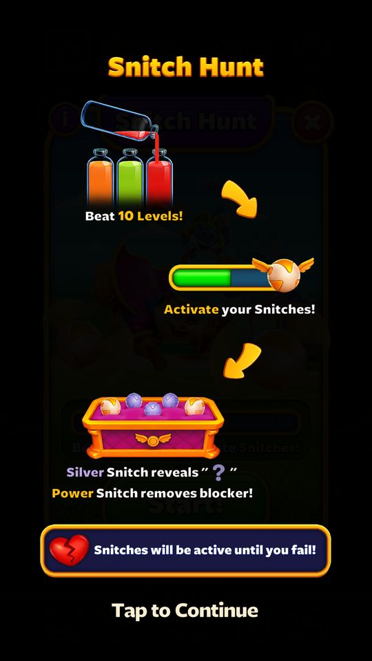

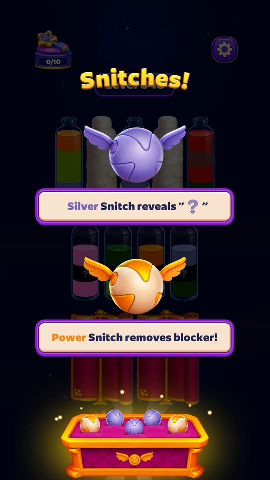

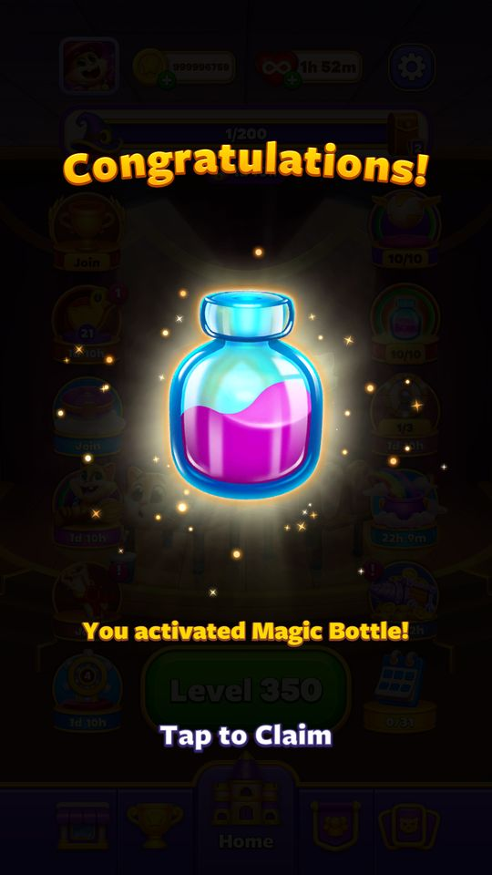

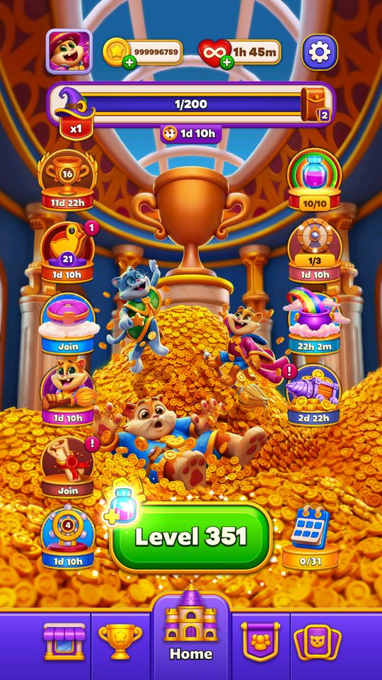

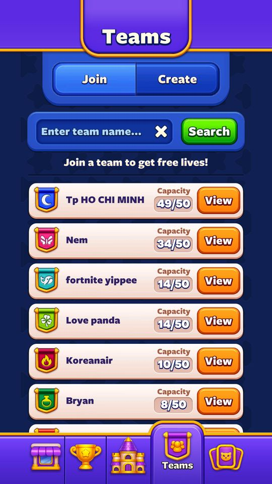

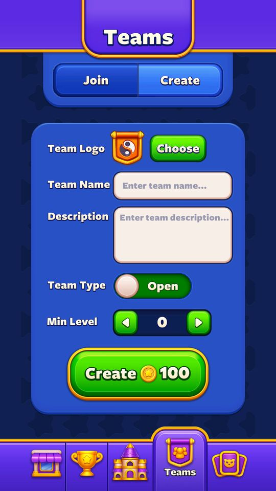
9. Đánh giá thiết kế
Điểm mạnh
- Một màn thắng đẩy nhiều sự kiện cùng lúc. Người chơi luôn thấy tiến độ ở đâu đó, kể cả khi không mua gì.
- Hệ số độ khó (x3/x5) biến màn khó, lẽ ra gây nản, thành cơ hội: người chơi có lý do muốn gặp màn Super Hard.
- Chuỗi giữ chân nêu đúng thứ người chơi sắp mất, đặt Play On ngay cạnh, đúng thời điểm.
- Giá theo phân khúc (5 bậc) và gói 0,99 USD giảm 90% cho người chưa mua là cách mở khóa lần trả tiền đầu tiên rất chuẩn.
Điểm yếu
- Quá nhiều popup sau một màn (10 popup sau màn 347). Người chơi mới gặp nhiều sự kiện cùng lúc dễ bị ngợp.
- Offer trả tiền xếp cuối cả danh sách popup lẫn danh sách icon, nên tuần nhiều sự kiện bị lấn át.
- Bỏ màn phải bấm 3–4 lần, cảm giác bị "giữ" quá tay.
- Quảng cáo playable không đóng được trên một số thiết bị là rủi ro trải nghiệm lớn.
Gợi ý
- Gộp các popup giới thiệu sự kiện mới vào một màn "Sự kiện tuần này" thay vì bật từng cái.
- Dành riêng 1 ô icon cho offer trả tiền đang hoạt động, không cạnh tranh với sự kiện miễn phí.
- Thử giá Play On "giữ chuỗi" rẻ hơn ở popup giữ chân thứ hai.
- Kiểm tra lỗi bàn trống của Magic Bottle trước khi bật lại tính năng này.